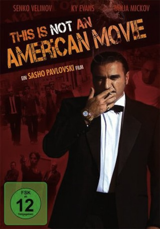

#9984 This Is Not an American Movie
 
 IMDB-Wertung: 5.4 / 10
IMDB-Wertung: 5.4 / 10  Metascore: 0
Metascore: 0 
In der Balkanrepublik Mazedonien treibt eine kleine Waffenschmugglerbande mit großem Faible für amerikanische Filme ihr Unwesen. Ihre Liebe zum Kino geht so weit, dass sich manche von ihnen nur mehr in Filmzitaten unterhalten, und ihr Boss sogar die Fähigkeit entwickelt hat, Szenen im wirklichen Leben mit einem "Fade Out" zu beenden oder einen Voiceover-Ton anzulegen. Nun ist der Drehbuchautor "gestorben", und die Bande braucht einen neuen. Maya hat in Amerika studiert und ein paar echt gute Ideen.
Jahr: 2011
Dauer: 86 Minuten
FSK: 12
Land: Mazedonien Studio: Schröder MediaTonspuren:
Untertitel:
Auflösung: 1080p (1920x1080) Größe: 5908 MB
Genre: Action, Komödie, Krimi
Regisseur: Saso Pavlovski
Drehbuch: Pavel Jech, Saso Milenkovski
Soundtrack:
Darsteller:
- Tony Naumovski als The Boxer
- Nikola Ristanovski als Screen Writer
- Senko Velinov als The Boss
- Ky Evans als Billy Willis
- Tanya Mickov als Maya
- Slavisha Kajevski als Little One
- Djordji Jolevski als Big Shadow
- Zlatko Mitreski als The Bold
- Igor Angelov als Hair
- Petre Arsovski als Chief of Police
- Jordanco Cevrevski als The Doctor
- Damir Boshnjak als Marine Soldier
- Gorast Cvetkovski als Special Force
- Boris Damovski als Eastern Brother
- Sasko Kocev als Special Force
- Nikola Nastoski als The Reporter
- Tomislav Naumovski als
- Saso Ognenovski als Robert
- Aleksandar Stepanuleski als The Doctor-2
- Igor Stojcevski als Skin Thin
- Visar Vishka als The American
Datei: X:\2011(N-Z)\This Is Not an American Movie (2011, FSK12, 1920x1080).mkv seit 15.11.2018
Festplatte: HD 2011(G-Z)
 Es gibt insgesamt 132 Filme in der Gruppe '2011(N-Z)'
Es gibt insgesamt 132 Filme in der Gruppe '2011(N-Z)'